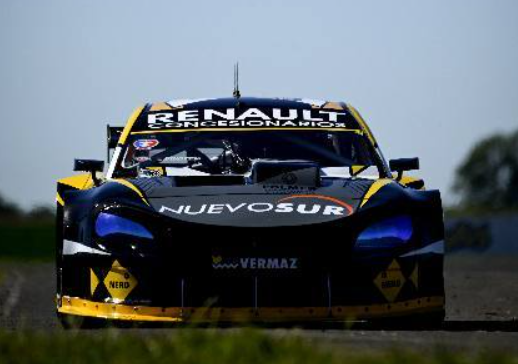

Agrelo no pudo completar la final en Concepción y ya piensa en la recuperación

El Turismo Carretera disputó una nueva fecha en Concepción del Uruguay, donde Marcelo Agrelo fue protagonista de un fin de semana exigente que no pudo cerrar de la mejor manera tras un abandono en la final.
El piloto de Comodoro Rivadavia inició su actividad con una clasificación que lo ubicó en el puesto 21, en una tanda muy ajustada que tuvo como gran protagonista al joven Marco Dianda, quien hizo historia al convertirse en el poleman más joven de la categoría.
Ya en el día sábado, Agrelo formó parte de la tercera serie, donde logró avanzar y cerrar un 5° puesto. La batería fue ganada por José Manuel Urcera, seguido por Jeremías Scialchi y Jorge Barrio.
En las otras series, los triunfos quedaron en manos de Mauricio Lambiris, acompañado por Otto Fritzler y Julián Santero, mientras que en la segunda batería se impuso Santiago Mangoni, con Agustín Canapino y Diego Azar como escoltas.
El domingo, en la final, Agrelo buscaba sumar puntos importantes, pero un despiste lo dejó fuera de carrera, sin poder completar la competencia.
La victoria quedó en manos de Santiago Mangoni, seguido por Mauricio Lambiris y José Manuel Urcera, en una carrera que volvió a mostrar el alto nivel y la paridad del Turismo Carretera.
Ahora, el piloto comodorense ya piensa en lo que viene, con el objetivo de revertir este arranque de temporada en la próxima fecha en Termas de Río Hondo y volver a ser protagonista dentro de la categoría.